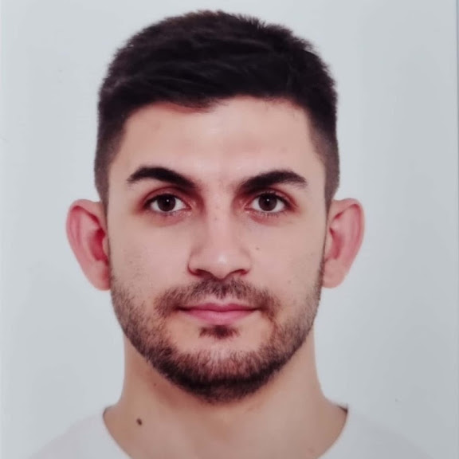

Hikmet Burak Özcan
Research Assistant, Department of Mathematics, İzmir Institute of Technology
Welcome to my website! I am a PhD candidate in Mathematics specializing in Harmonic Analysis. Since 2019, I have been working as a research assistant at İzmir Institute of Technology. Here, you can explore my publications, course materials from the classes where I serve as a teaching assistant, and information about the seminars I give at conferences, workshops, and our department’s regular seminar series. You will also find some of my paintings—as a beginner—and photographs I have taken during my travels.